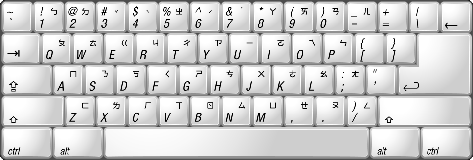

中、港、臺常用字字符集
國語注音符號手冊
37個國語注音符號發音檔
汉语拼音方案（基本是注音符號的拉丁字母化）
普通话知识竞赛问答题
跟中國大陸的簡、繁之爭一樣，中國臺灣也有注音、拼音之爭，但奇葩點在于政策相當不穩定，各種方案如威妥瑪拼音（1892）、郵政式拼音（1906）、國語羅馬字（1928）、耶魯拼音（1943）、注音二式（1986）、通用拼音（1998）以及大陸的漢語拼音夾雜使用，沒有統一的標準，造成了不必要的混亂狀況，甚至出現了“四不像”拼音。
各種拼音對照表
《華語文漢字教學研究》第一章 華語教學中「拼音教學法」研究
注音符號發展史
「國語注音符號的回顧與展望」座談會
漢語拼音是比較好的漢字羅馬化方案
新編華語注音符號課本
新編華語注音符號習作簿
新編華語注音符號教學指引
學華語開步走課本(注音符號)
學華語開步走課本(漢語拼音)
學華語開步走習作(注音符號)
學華語開步走習作(漢語拼音)
學華語開步走教師手冊
自編國小一至六年級生字語詞簿
注音符號（U+3100–U+312F）
注音符號擴充（U+31A0–U+31BF）
注音輸入法
很類似大陸的“雙拼”輸入法，只是注音輸入法一般必須要打聲調。再者就是大陸人學習注音輸入法時需要把《漢語拼音方案》里聲母表、韻母表下面那些注解統統恢復原狀，否則就掉坑里了。
鍵盤方案也有很多種：
1、大千注音鍵盤：亦稱“標準鍵盤”，Windows/Mac/Android等自帶注音、新注音一般默認都是用這個鍵盤方案。
把聲母、介母、韻母、聲調共42個按左區聲母、中間介母、右區韻母的順序排列在鍵盤上。

2、許氏注音鍵盤（只用25鍵，不占用數字鍵和標點符號鍵）
另外還有倚天41鍵鍵盤、倚天26鍵鍵盤、IBM注音鍵盤等。
形碼輸入法
五筆
鄭碼
倉頡
大易
行列
嘸蝦米
資料
中华语文知识库
语料库在线
汉字全息资源应用系统
教育技术通讯
《辭源》第三版網絡版
中国大百科全书数据库（国际版）
漢語大詞典、漢語大詞典訂補、康熙字典知網版
中文信息学报
中华经典资源库
中国大百科全书数据库
书同文汉字网
電子佛典集成
Frequency and Stroke Counts of Chinese Characters
古今文字集成
博學堂
東里書齋
篆刻網
Index 引得市
四庫全書
汉典
叶典
字海
Traditional Chinese Characters
中國哲學書電子化計劃
香港·政府資訊科技總監辦公室：共通中文界面
香港、大陸、台灣 - 跨地區、跨年代漢語常用字頻統計
漢語多功能字庫
教育部全球資訊網
教育部 語文成果網
國語一字多音審訂表（88年3月公告）(現行規範)
國語一字多音審訂表（初稿-101年12月12日公告）
小學堂
全球華語文數位教與學資源中心
國際電腦漢字及異體字知識庫
Advanced Chinese Character Electronic Search System (ACCESS)
文獻處理實驗室
漢字構形庫Web
漢字知識本體
缺字檢索系統
雙語詞彙、學術名詞暨辭書資訊網
搜文解字
遠流活用中文大辭典
常用國字標準字體筆順學習網
重編國語辭典修訂本
國語辭典簡編本
國語小字典
成語典
異體字字典
臺灣閩南語常用詞辭典
臺灣客家語常用詞辭典
臺語教學研究網站
中央研究院漢語平衡語料庫
書法教學資料庫
典藏台灣
開放康熙字典
臺灣原住民族歷史語言文化大辭典
文字情報基盤整備事業
文字図形の一覧表（文字図形番号順）索引
文字図形の一覧表（部首・部首内画数順）索引
訂正康熙字典 渡部温 編
青蛙亭漢語塾
超漢字